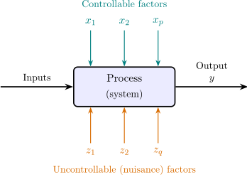

1 Introduction
An experiment is a test or series of tests in which changes are made to the input variables of a process or system so that the reasons for changes in the output response may be observed and identified.
The process may be a chemical reaction, a crop growing in a field, a patient responding to a drug or a machine producing parts. In each case some inputs are under the experimenter’s control, some are not, and the output is affected by both (Figure 1).

The objectives of an experiment may include determining which factors have the most influence on the response, where to set the controllable factors so that the response is near a target, or so that its variability is small, and where to set them so that the effects of the uncontrollable factors are minimised.
Statistical design of experiments refers to the process of planning the experiment so that appropriate data that can be analysed by statistical methods will be collected, resulting in valid and objective conclusions.
Design and analysis cannot be separated. The design decides which comparisons the data can support and with what precision; the analysis can only extract what the design has put there. A well-designed experiment is often analysed with nothing more than a table of means. A badly designed one cannot be rescued by any analysis, however sophisticated. R. A. Fisher put it bluntly: to consult the statistician after an experiment is finished is often merely to ask him to conduct a post mortem examination; he can perhaps say what the experiment died of.
1.2 Principles of experimental design
1.3 Randomisation as the basis of inference
1.4 Blocking: the tyre example
1.5 Strategies of experimentation
1.6 Guidelines for designing an experiment
1.7 A short history
1.8 Practice problems
Questions on this section
Stuck on something here? Ask below and it stays attached to this topic.